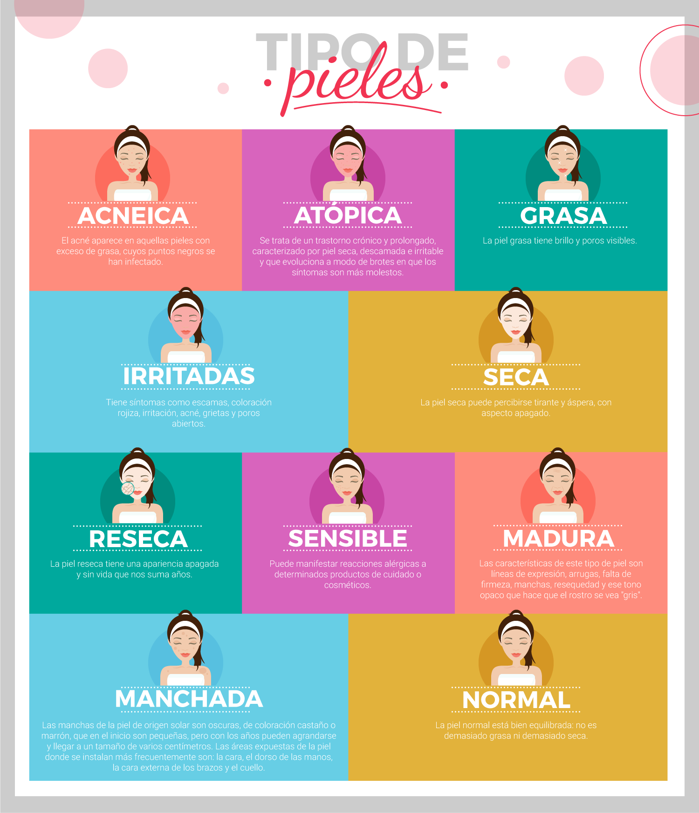
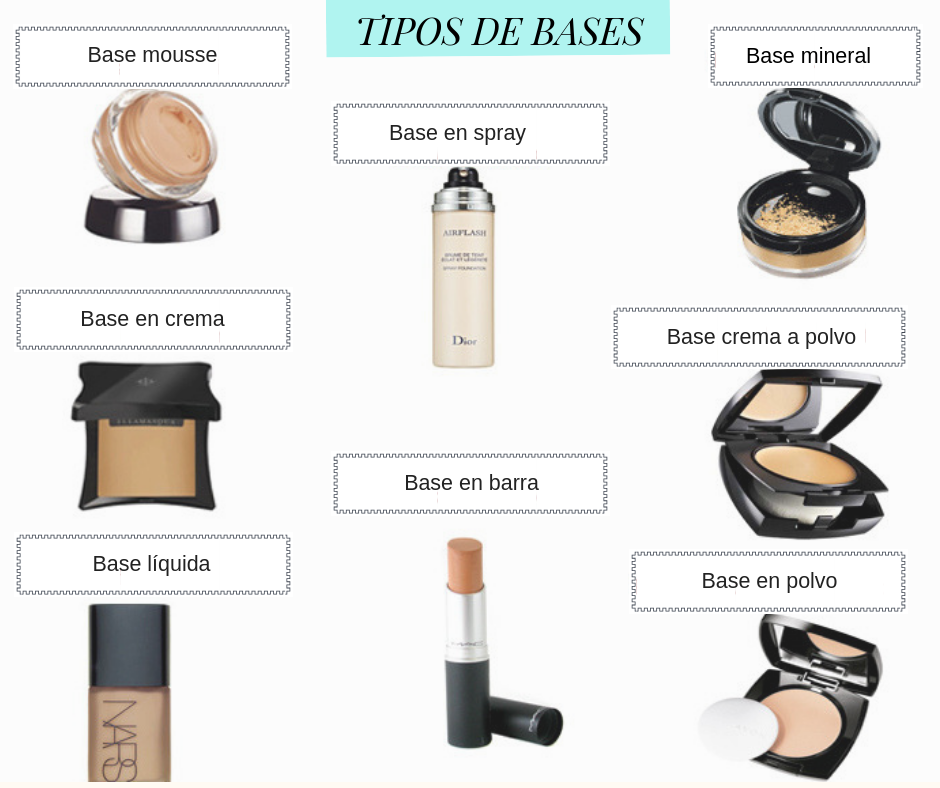
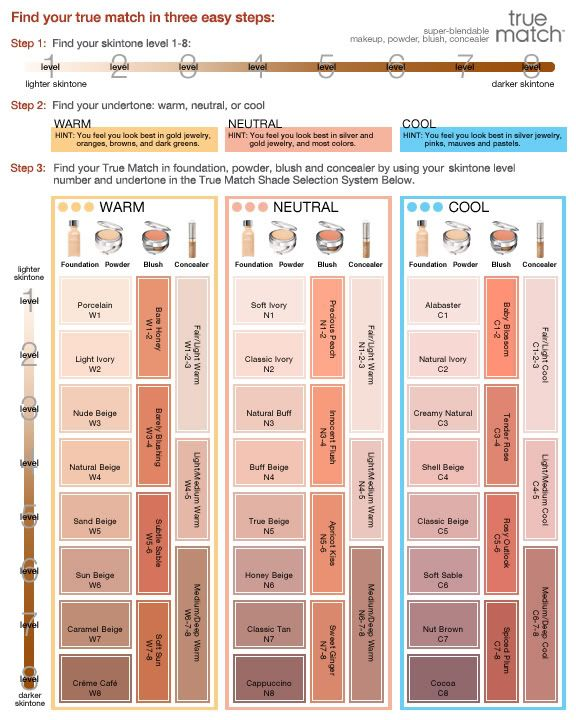

Muchas veces tenemos problemas con nuestro maquillaje debido a que no nos cubre lo suficiente o es muy pesado e incluso el hecho de que se desvanezca cuando nuestro rostro es muy graso, por lo que es necesario saber las necesidades de nuestro rostro y así poder elegir la base correcta y el tono correcto.
Primero lo primero, necesitas identificar que tipo de piel tienes, te dejo esta guía para ayudarte 👇

Una vez que sepas qué tipo de piel tienes puedes ver qué tipo de base te servirá, estos son los tipos que existen:

1.- Las bases líquidas sirven para todo tipo de pieles, son de cobertura media con una acabado natural y fáciles de aplicar.
2.- Las bases en crema son para pieles secas, es cobertura alta, son ideales para cubrir imperfecciones y son de suave aplicación.
3.- Las bases en polvo son para pieles grasas o mixtas, son de máxima cobertura y de aplicación rápida.
4.- Las bases minerales son para pieles sensibles o con tendencia a acné, son de cobertura media, dan un acabado natural y son de aplicación rápida.
5.- Base en barra funciona para todo tipo de piel, ayuda a disimular las imperfecciones y ofrece un acabado cremoso.
6.- Base de maquillaje en mousse es apta para todo tipo de piel, es para un maquillaje natural y ligero, dejando un aspecto aterciopelado, tiene una cobertura ligera.
7.- Base crema a polvo o cushion es una de las más cómodas y fáciles de aplicar, es para todo tipo de piel. Se trata de una esponja empapada de producto que a medida que la vamos presionando, va liberando el maquillaje de su interior, haciendo que sea muy limpio
8.- La base en spray es un producto que te permite recibir una cobertura más suave y sin imperfecciones aplicando una capa más uniforme de maquillaje, puedes encontrarla en varias presentaciones para distintos tipos de pieles.
Finalmente, tienes que elegir el tono de tu base, para esto necesitas saber la tonalidad de tu piel. La siguiente guía sugiere los siguientes steps o pasos:
1.- Encuentra tu tonalidad entre el 1 al 8
2.- Encuentra tu subtono: cálido, neutral o frío
| Cálido (Warm) | Neutral | Frío (Cool) |
|---|---|---|
| Eres cálida si sientes que te ves mejor con joyería en tonos oro, naranjas, café, y verdes oscuros | Eres neutra si sientes que te queda la joyería de oro, plateada o de cualquier color. | Eres de tonos frío si te queda mejor la joyería plateada, rosa , color malva o colores pasteles. |
3.- Encuentra tu base, polvo, rubor y corrector usando el número de la tonalidad de tu piel y el subtono en la siguiente imagen.

En mi caso estoy en un rango entre 3 y 4 , mi subtono es cálido por lo que la base que me quedaría es la Nude Beige W3 o la Naural Beige W4, yo elegí la W4 de True Match L'Oréal Paris y me ha funcionado de maravilla, esta base tiene una buena cobertura y es líquida lo que me da un acabado natural y es muy fácil de aplicar.
Espero les sirva esta guía tanto como me ha servido a mí para dejar de usar la base y tono incorrecto.
Si les gustó compártanlo con sus amigos y en sus redes sociales.
Mis Herramientas de trabajo
Laptop: Acer Aspire R15 Convertible
Cámara: Nikon D5300
Celular: Oneplus 3T